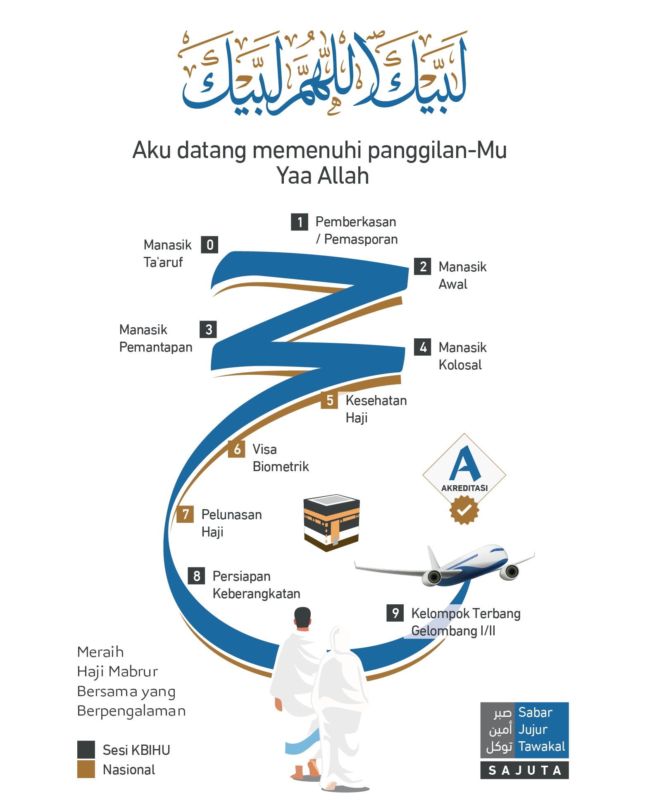
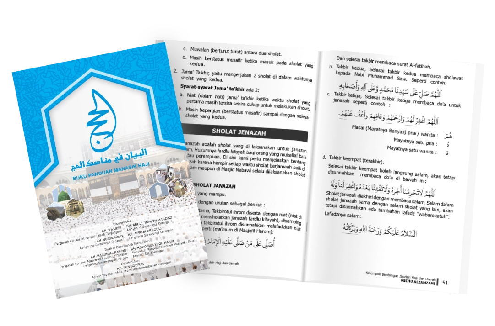
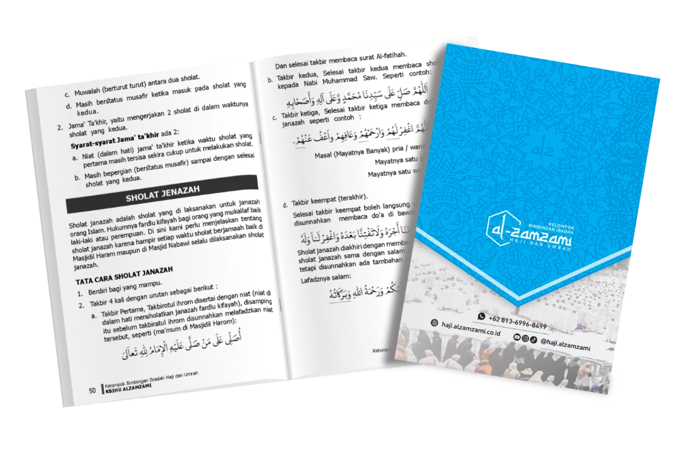
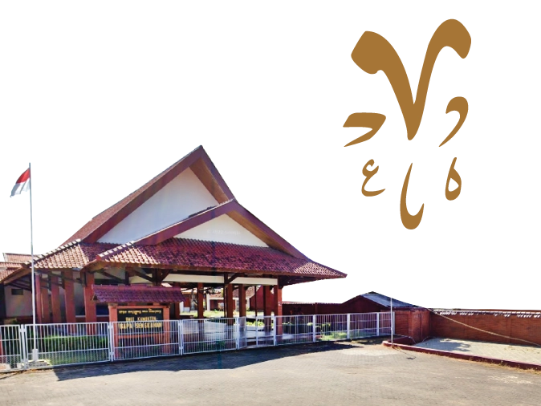

Detail Bimbingan Manasik
Temukan informasi lengkap mengenai tahapan, Tutor/Pembimbing, dan fasilitas program bimbingan manasik haji eksklusif bersama KBIHU Al-Zamzami.
URGENSI MANASIK HAJI
Ilmu manasik haji sangat krusial agar ibadah haji sah, tertib, dan mencapai derajat mabrur. Tanpa ilmu, ibadah haji bisa tidak sah, zalim, atau jauh dari kebenaran karena ibadah haji adalah ibadah fisik dan teknis yang kompleks. Berikut adalah dalil dan dasar hukum pentingnya mempelajari ilmu manasik haji:
لِتَأْخُذُوا مَنَاسِكَكُمْ
"Ambillah manasik (tata cara haji) kalian dariku." (HR. Muslim)
Hadits ini menegaskan bahwa tata cara haji harus sesuai dengan contoh Rasulullah ﷺ, yang hanya bisa diketahui melalui menuntut ilmu manasik. Allah Subhanahu wa Ta'ala berfirman:
وَأَتِمُّوا الْحَجَّ وَالْعُمْرَةَ لِلّٰهِ
"Dan sempurnakanlah ibadah haji dan 'umrah karena Allah." (QS.
Al-Baqarah: 196)
Para ulama menafsirkan ayat ini dengan menegaskan pentingnya mempelajari rukun, wajib, dan sunnah haji agar ibadah tersebut menjadi "sempurna" (mabrur).
...وَتَزَوَّدُوا فَإِنَّ خَيْرَ الزَّادِ التَّقْوَىٰ...
"…Berbekallah, dan sesungguhnya sebaik-baik bekal adalah takwa..." (QS. Al-Baqarah: 197)
Salah satu takwa yang utama adalah melakukan ibadah sesuai perintah Allah dan contoh Nabi-Nya, yang mustahil dilakukan tanpa ilmu manasik.
Kesimpulannya, manasik haji bukan sekadar kegiatan administratif, melainkan kewajiban ilmu untuk memastikan ibadah haji sah sesuai syariat.



البيان في مناسك الحج
Muqoddimah Panduan Manasik Haji
Buku manasik ini kami susun atas permohonan dari beberapa calon haji, dan atas permohonan dari pengurus KBIHU Al Zamzami, untuk disajikan kepada jamaah calon haji yang bernaung di bawahnya atau siapa saja yang memerlukan, Agar supaya bisa mempermudah mereka di dalam memahami manasik haji dan umroh. Buku ini terdiri dari dua bagian, bagian pertama tentang manasik, bagian kedua khusus doa' do'a, dan kami beri judul "Albayan fi Manasik Al-Haj" (Penjelasan Manasik Haji) yang bermadzhab Syafi'i. Namun untuk bahan pelengkap dalam beberapa hal kami tambahkan pendapat lain dari sebagian madzhab empat, agar bisa dijadikan sebagai solusi demi tercapainya Haji Mabrur sebagaimana yang kita harapkan.
Materi yang terdapat di dalam buku ini kami ambil dan rangkum serta kami sarikan dari beberapa kitab, diantaranya Idlohul Manasik lin Nawawi, Taqriratus sadidah lil Hasan bin Ahmad Al Kaf. Fathul Qorib lil Ibni Qosim, Ihya 'Ulumuddin lil Ghozali, Al Mughni Fi Fiqhil Haj lil Sa'id bin Abdul Qodir Ba Syanfar, Fathul 'Allam lil Assayid Muhammad Abdillah Al Jordani dan kitab-kitab manasik lainnya.
Di Susun Oleh:
- KH. Abdul Muhith
Lengkong-Garawangi - KH. Nur Rohmat
Lengkong-Garawangi - KH. Amron Arrodli
Lengkong-Garawangi - KH. Ii Izudin
Tanjungsari-Purwawinangun
Di Tashih Oleh:
- KH. Harun Al Rosyid (Alm)
Lengkong-Garawangi - KH. Koko Busyrol Karim
Tanjungsari-Purwawinangun
Konstributor:
- KH. Ikin Sodikin (Alm)
Pendiri Yayasan Al-Zamzami Windusengkahan-Kuningan
GURU-GURU KAMI
Para Tutor dan Pembimbing Manasik
KH. Abdul Muhith
Pimpinan Pondok Pesantren Raudlatut Tholibin Lengkong Garawangi sekaligus murid dari KH. Maimun Zubair.
KH. Uu Umarudin
Pengasuh Majelis Hasan Almaani Kel. Awirarangan Kuningan.
KH. Nur Rohmat
Pengajar di Pondok Pesantren Raudlatut Tholibin Lengkong Garawangi.
KH. Enjam J. Ridwanulhakim
Pengasuh Majelis Uswatun Hasanah Kel. Windusengkahan Kuningan.
KH. Fitriyadi Siraj
Pengasuh Majelis Assalam Kel. Purwawinangun Kuningan.
Absensi Kehadiran. Kartu Peserta Bimbingan.
Setiap peserta bimbingan akan memiliki kartu peserta. Kartu peserta ini akan di scan setiap kali hadir dalam sesi bimbingan untuk memudahkan absensi. Dengan sistem ini, kami dapat menghemat waktu dan memastikan kehadiran setiap peserta tercatat dengan akurat, sehingga Anda dapat fokus pada pembelajaran.
Layanan Bimbingan Eksklusif. Kenyamanan Anda Prioritas Kami.
Tempat semi outdoor, sejuk dan nyaman, tersedia tempat menginap, parkir luas dan akses mudah.
Selain itu kami juga menyediakan snack dan Caffe Break untuk memastikan Anda tetap segar selama sesi
bimbingan.
Klik Peta Lokasi
Manasik

- 1
- 2
- 3
Piagam Haji
Piagam/Sertifikat haji resmi yang diberikan kepada setiap jemaah setelah menyelesaikan program bimbingan manasik haji. Lengkap dengan kemanan ke aslian dan seluruh dokumen keberangkatan jemaah serta terintegrasi dengan sertifikat digital yang di keluarkan oleh Kementerian Haji RI.
Album Kenangan
Yang sekarang banyak di tiru oleh penyedia layanan bimbingan manasik haji lainnya adalah Album Kenangan. Album ini memuat Daftar Jemaah yang mengikuti bimbingan manasik haji dan foto kegiatan. Hal ini kami buat untuk memberikan kenangan indah bagi setiap jemaah yang mengikuti bimbingan manasik haji bersama KBIHU Al-Zamzami supaya silaturahmi antar jemaah tetap terjalin baik.